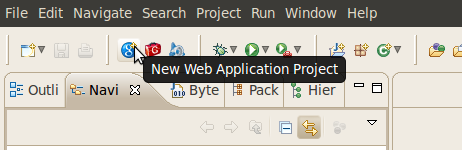
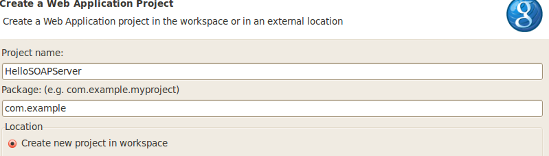
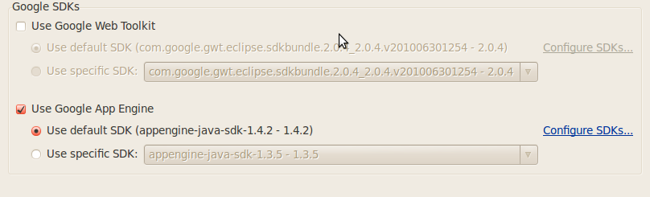
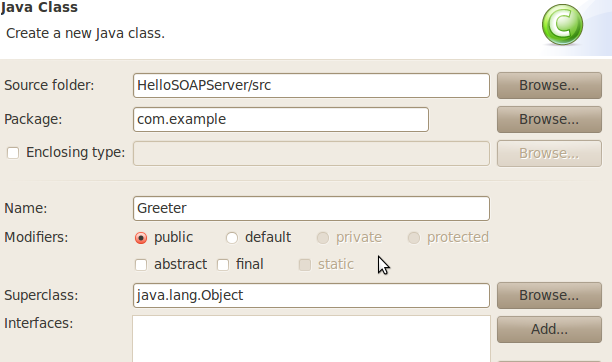
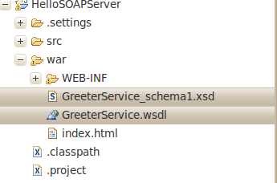
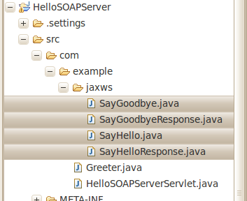

Summary
Starting in release 1.4.2 of Google App Engine, it is possible to use java.xml.soap and JAX-B to build a SOAP server, and to use JAX-WS to build a SOAP client on App Engine.
This HOWTO walks through building a simple Hello World application that does this. We will build two App Engine applications: one for the server and one for the client. Building the SOAP client is easier than building the server, so if you only care about building a SOAP client you may skip ahead to the client section. But we start with the section on building the server because it is a logical prerequisite if you don't already have some other existing SOAP server.
Building a SOAP Server on Google App Engine
1. Create a new App Engine Java Web Application project.
I'm using Eclipse version 3.5 with Google Plugin version 1.3.3.
If you are using different versions the screenshots might not match your environment exactly.

Figure 1. Creating a new App Engine Web Application Project.
Name the project "HelloSOAPServer" and use "com.example" for the package.

Figure 2. Naming a new App Engine Web Application Project.
You don't need to use Google Web Toolkit but you do need to use Google App Engine. Select version 1.4.2 or higher of the SDK.

Figure 3. Selecting the SDK version.
The class com.example.HelloSOAPServerServlet is created for you automatically.
2. Create a class with methods that you wish to expose through SOAP.
For our example, name the class "Greeter" and put it in the package com.example:

Figure 4. Creating a new Java class.
We'll keep things very simple. Our class will only expose two simple methods: sayHello() and sayGoodbye().
package com.example;
public class Greeter {
public String sayHello(String name){
return "Hello, " + name+ "!";
}
public String sayGoodbye(String name){
return "Goodbye, " + name + "!";
}
}
3. Add the javax.jws.WebService annotation to the class, and the javax.jws.WebMethod annotation
to each of the methods you wish to expose through SOAP.
package com.example;
import javax.jws.WebMethod;
import javax.jws.WebService;
@WebService
public class Greeter {
@WebMethod
public String sayHello(String name){
return "Hello, " + name+ "!";
}
@WebMethod
public String sayGoodbye(String name){
return "Goodbye, " + name + "!";
}
}
As of version 1.4.2 Google App Engine does not support the use of JAX-WS in a SOAP server.
(It is supported in a SOAP client.) As we'll see below, in order to complete the SOAP server we will have to directly use
javax.xml.soap and JAX-B. So then why did we bother to add the JAX-WS annotations?
As we'll see, we can take advantage of the the JAX-WS tool wsgen to generate a WSDL
file and the JAX-B POJOs that will be of use to us in our SOAP server. The annotations are needed for that reason.
4. Run wsgen on the annoted class. This tool is now included in the JDK. My JDK includes the version from JAX-WS RI 2.1.6.
(You can discover the version by typing wsgen -version.) Because wsgen has several command-line arguments, I have written a
Linux shell script called runwsgen.sh to execute it. If you are not using Linux, you will have to translate this script to your
OS scripting language. Place the following script in the root directory of the project (i.e. the parent directory of war and src)
and execute it from there.
class=com.example.Greeter
clpth='./war/WEB-INF/classes'
resourcedir='./war'
outsourcedir='./src'
outdir='./war/WEB-INF/classes'
wsgen -cp "$clpth" -wsdl -keep -r "$resourcedir" -d "$outdir" -s "$outsourcedir" $class
I'll now go through the results of executing this script while at the same time explaining
what each of the arguments mean.
-
class=com.example.Greeter – defines the main argument of the wsgen command to be our annotated class.
-
clpth='./war/WEB-INF/classes' – tells wsgen where to find com/example/Greeter.class.
WSGEN does not operate on Java source files but rather on Java class files.
-
resourcedir='./war' – tells wsgen where to put the generated WSDL file GreeterService.wsdl
and the associated XML schema document GreeterService_schema1.xsd. Notice the
command line argument -wsdl was used to tell wsgen to generate a WSDL.
I put the two files in the war directory because I want them to be included in
the war file to be deployed on App Engine. Putting the files in that directory
allows the SOAP client to access them from there.

-
outsourcedir='./src' – tells wsgen where to put the generated Java source files.
Notice the command line argument -keep, which tells wsgen to keep the generated Java source files.
WSGEN generated four Java classes in the package com.example.jaxws:
- SayGoodbye
- SayGoodbyeResponse
- SayHello
- SayHelloResponse
These are POJOs with JAX-B annotations corresponding to the request and response for each of the methods in Greeter.java
that we annoted with @WebMethod. I chose to put the generated source files into the src directory so that
they would become part of the source code for my project.

-
outdir='./war/WEB-INF/classes.' – tells wsgen where to put the generated class files.
Actually I don't need the generated class files at all because Eclipse will compile the generated Java source files for me.
But I chose to let wsgen put the class files into their proper place in WEB-INF/classes anyway.
5. Put the SOAP request URL into the WSDL file. Take a look at the generated GreeterService.wsdl file. I'm not going to explain the
contents of this file in any detail. The primary thing to know about the WSDL file is that it, along with the associated XML Schema document,
describes the XML that must be sent in a SOAP request and the XML that should be expected in a SOAP response. Another role of the WSDL is to
specify the URL to where SOAP requests should be sent. Notice that in the generated WSDL file the URL is represented by a place-holder:
'REPLACE_WITH_ACTUAL_URL'. Replace this string with the actual URL of your SOAP server. We are going to use the
HelloSoapServerServlet that was automatically generated by the Google Eclipse plugin to serve SOAP requests. In the automatically
generated web.xml file this servlet has been mapped to the URL path
/hellosoapserver. We are going to deploy our application to App Engine running on appspot.com.
So the actual URL that should go into the WSDL file is http://your_app_id.appspot.com/hellosoapserver.
For example if our app ID were greeter-soap-example then the actual URL would be
http://greeter-soap-example.appspot.com/hellosoapserver.
<service name="GreeterService">
<port name="GreeterPort" binding="tns:GreeterPortBinding">
<soap:address location="http://greeter-soap-example.appspot.com/hellosoapserver"/>
</port>
</service>
6. Write an adapter class to adapt between a signature that uses the JAX-B POJOs that were generated by wsgen and the signature of your real business logic methods. In our case we need to adapt between one signature that uses SayHello, SayHelloResponse, SayGoodbye, and SayGoodbyeResponse—to the signature of Greeter.java that takes Strings as inputs and yields Strings as outputs. The class GreeterAdapter does that for us. This step would not be necessary if JAX-WS for SOAP servers were supported on App Engine, but it currently is not. Here is the code for GreeterAdapter. (We have not included any comments for the sake of brevity.)
package com.example;
import com.example.jaxws.SayGoodbye;
import com.example.jaxws.SayGoodbyeResponse;
import com.example.jaxws.SayHello;
import com.example.jaxws.SayHelloResponse;
public class GreeterAdapter {
private Greeter greeter = new Greeter();
public SayHelloResponse sayHello(SayHello request){
String name = request.getArg0();
String responseGreeting = greeter.sayHello(name);
SayHelloResponse response = new SayHelloResponse();
response.setReturn(responseGreeting);
return response;
}
public SayGoodbyeResponse sayGoodbye(SayGoodbye request){
String name = request.getArg0();
String responseGreeting = greeter.sayGoodbye(name);
SayGoodbyeResponse response = new SayGoodbyeResponse();
response.setReturn(responseGreeting);
return response;
}
}
7. Write a SOAPHandler class that implements the following method:
public SOAPMessage handleSOAPRequest(SOAPMessage request);
SOAPMessage is a class from javax.xml.SOAP that represents a SOAP request or response message.
The purpose of handleSOAPRequest() is to accept a SOAPMessage representing a request for one of the
methods annoted with @WebMethod, either sayHello() or sayGoodbye(), use JAX-B to generate the appropriate POJO,
either a SayHello object or a SayGoodbye object, and forward the call on to the appropriate method in GreeterAdapter,
either sayHello() or sayGoodbye(). Again, this step would not be necessary if JAX-WS on the server side was supported on App Engine.
In order to be able to distinguish whether the request is for sayHello() or sayGoodbye(),
SOAPHandler will need to make use of the XML element names of the SOAP elements corresponding to each of these methods.
These names may be found in one of two places. Firstly, the names may be found in the JAX-B annotations of the generated POJO classes.
For example if we look in SayHello.java we find the following annotation:
@XmlRootElement(name = "sayHello", namespace = "http://example.com/").
And if we look in SayGoodby.java we find the following annotation:
XmlRootElement(name = "sayGoodbye", namespace = "http://example.com/").
The second place where the XML element names may be found is in the generated XSD file.
If we look in GreeterService_schema1.xsd we see:
<xs:schema version="1.0" targetNamespace="http://example.com/"
xmlns:tns="http://example.com/" xmlns:xs="http://www.w3.org/2001/XMLSchema">
<xs:element name="sayHello" type="tns:sayHello"/>
<xs:element name="sayGoodbye" type="tns:sayGoodbye"/>
Here is the code for GreeterSOAPHandler.java. Again there are no comments for conciseness.
package com.example;
import java.util.Iterator;
import javax.xml.bind.JAXB;
import javax.xml.namespace.QName;
import javax.xml.soap.MessageFactory;
import javax.xml.soap.SAAJResult;
import javax.xml.soap.SOAPBody;
import javax.xml.soap.SOAPElement;
import javax.xml.soap.SOAPException;
import javax.xml.soap.SOAPFault;
import javax.xml.soap.SOAPMessage;
import javax.xml.transform.dom.DOMSource;
import com.example.jaxws.SayGoodbye;
import com.example.jaxws.SayHello;
public class GreeterSOAPHandler {
private static final String NAMESPACE_URI = "http://example.com/";
private static final QName SAY_HELLO_QNAME = new QName(NAMESPACE_URI, "sayHello");
private static final QName SAY_GOODBYE_QNAME = new QName(NAMESPACE_URI, "sayGoodbye");
private MessageFactory messageFactory;
private GreeterAdapter greeterAdapter;
public GreeterSOAPHandler() throws SOAPException {
messageFactory = MessageFactory.newInstance();
greeterAdapter = new GreeterAdapter();
}
public SOAPMessage handleSOAPRequest(SOAPMessage request) throws SOAPException {
SOAPBody soapBody = request.getSOAPBody();
Iterator iterator = soapBody.getChildElements();
Object responsePojo = null;
while (iterator.hasNext()) {
Object next = iterator.next();
if (next instanceof SOAPElement) {
SOAPElement soapElement = (SOAPElement) next;
QName qname = soapElement.getElementQName();
if (SAY_HELLO_QNAME.equals(qname)) {
responsePojo = handleSayHelloRequest(soapElement);
break;
} else if (SAY_GOODBYE_QNAME.equals(qname)) {
responsePojo = handleSayGoodbyeRequest(soapElement);
break;
}
}
}
SOAPMessage soapResponse = messageFactory.createMessage();
soapBody = soapResponse.getSOAPBody();
if (responsePojo != null) {
JAXB.marshal(responsePojo, new SAAJResult(soapBody));
} else {
SOAPFault fault = soapBody.addFault();
fault.setFaultString("Unrecognized SOAP request.");
}
return soapResponse;
}
private Object handleSayHelloRequest(SOAPElement soapElement) {
SayHello sayHelloRequest = JAXB.unmarshal(new DOMSource(soapElement), SayHello.class);
return greeterAdapter.sayHello(sayHelloRequest);
}
private Object handleSayGoodbyeRequest(SOAPElement soapElement) {
SayGoodbye sayGoodbyeRequest =
JAXB.unmarshal(new DOMSource(soapElement), SayGoodbye.class);
return greeterAdapter.sayGoodbye(sayGoodbyeRequest);
}
}
8. Write a doPost(HttpServletRequest req, HttpServletResponse resp) method in HelloSOAPServerServlet.java.
This method will do the following things:
- Construct a SOAPMessage from the XML in the HTTP request.
- Pass the SOAPMessage to handleSOAPRequest(SOAPMessage request) and obtain a SOAPMessage response.
- Serialize the SOAPMessage response to the HTTP response
Here is the code for HelloSOAPServerServlet.java.
package com.example;
import java.io.IOException;
import java.io.InputStream;
import java.io.OutputStream;
import java.util.Enumeration;
import java.util.StringTokenizer;
import javax.servlet.http.HttpServlet;
import javax.servlet.http.HttpServletRequest;
import javax.servlet.http.HttpServletResponse;
import javax.xml.soap.MessageFactory;
import javax.xml.soap.MimeHeaders;
import javax.xml.soap.SOAPException;
import javax.xml.soap.SOAPMessage;
@SuppressWarnings("serial")
public class HelloSOAPServerServlet extends HttpServlet {
static MessageFactory messageFactory;
static GreeterSOAPHandler soapHandler;
static {
try {
messageFactory = MessageFactory.newInstance();
soapHandler = new GreeterSOAPHandler();
} catch (Exception ex) {
throw new RuntimeException(ex);
}
}
@Override
public void doPost(HttpServletRequest req, HttpServletResponse resp) throws IOException {
try {
// Get all the headers from the HTTP request
MimeHeaders headers = getHeaders(req);
// Construct a SOAPMessage from the XML in the request body
InputStream is = req.getInputStream();
SOAPMessage soapRequest = messageFactory.createMessage(headers, is);
// Handle soapReqest
SOAPMessage soapResponse = soapHandler.handleSOAPRequest(soapRequest);
// Write to HttpServeltResponse
resp.setStatus(HttpServletResponse.SC_OK);
resp.setContentType("text/xml;charset=\"utf-8\"");
OutputStream os = resp.getOutputStream();
soapResponse.writeTo(os);
os.flush();
} catch (SOAPException e) {
throw new IOException("Exception while creating SOAP message.", e);
}
}
@SuppressWarnings("unchecked")
static MimeHeaders getHeaders(HttpServletRequest req) {
Enumeration headerNames = req.getHeaderNames();
MimeHeaders headers = new MimeHeaders();
while (headerNames.hasMoreElements()) {
String headerName = (String) headerNames.nextElement();
String headerValue = req.getHeader(headerName);
StringTokenizer values = new StringTokenizer(headerValue, ",");
while (values.hasMoreTokens()) {
headers.addHeader(headerName, values.nextToken().trim());
}
}
return headers;
}
}
9. Deploy the application to Google App Engine. Make sure to use the same app ID that was specified in the WSDL file.
In our example this is greeter-soap-example.
Building a SOAP Client on Google App Engine Using JAX-WS
In this section we walk through the steps necessary to build a SOAP client.
If you are only interested in building a client and not a server, and if you already have some existing SOAP server,
you can skip right to this section and use the techniques here to build a client for your server.
We will build a client for the server we built in the previous section.
1. Create another new App Engine Java Web Application project. Name the project "HelloSOAPClient" and use
"com.example" for the package. See the screenshots in the previous section.
Select version 1.4.2 or higher of the Google App Engine SDK.
The class com.example.HelloSOAPClientServlet is created for you automatically.
2. Run wsimport to generate client-side JAX-WS classes from a WSDL file.
This tool is now included in the JDK. My JDK includes the version from JAX-WS RI 2.1.6.
(You can discover the version by typing wsimport -version.) Because wsimport has several command-line arguments,
I have written a Linux shell script called runwsimport.sh to execute it. If you are not using Linux,
you will have to translate this script to your OS scripting language. Place the following script in the
root directory of the project (i.e. the parent directory of war and src) and execute it from there.
wsdluri='http://greeter-soap-example.appspot.com/GreeterService.wsdl'
gensrcdir='./src'
targetpackage='com.example'
genoutdir='./war/WEB-INF/classes'
wsimport -d "$genoutdir" -s "$gensrcdir" -p $targetpackage -keep "$wsdluri"
You should see output from the script that looks something like the following:
parsing WSDL...
generating code...
compiling code...
I'll now go through the results of executing this script while at the same time explaining what each of the arguments means.
-
wsdluri='http://greeter-soap-example.appspot.com/GreeterService.wsdl' – tells wsimport from where it should
retrieve the WSDL. In our example, we have deployed the WSDL with the server, which is an App Engine application with app ID
greeter-soap-example. You could also specify a local file path if you have the WSDL locally. But keep in mind that the WSDL
contains the URL that JAX-WS will use to make SOAP requests. In our example the WSDL that we deployed on the server contains
the URL http://greeter-soap-example.appspot.com/hellosoapserver which will resolve to the default App Engine servlet in the
greeter-soap-example application.
-
gensrcdir='./src' – tells wsimport where to put the generated Java source files.
Notice the command line argument -keep which tells wsimport to keep the generated Java source files.
I chose to put the generated source files into the src directory so that they would become part of the source code for my project.
WSIMPORT generated eight Java classes in the package com.example. (If your version of wsimport is different than
mine it is possible that you may not have exactly the same eight files as me.)
- Greeter.java. This is an interface containing the methods described in the WSDL. In our case sayHello() and sayGoodbye().
- GreeterService.java. This is a factory that will return instances of Greeter. Note that this class contains the URL of the WSDL.
At runtime JAX-WS will fetch the WSDL from the location specified in this class, and then use the SOAP enpoint URL from the
WSDL to make the SOAP request.
- Several other Java classes that are used by JAX-WS but that we won't need to deal with directly.

-
targetpackage='com.example' – tells wsimport to generate Java classes in the com.example package.
-
genoutdir='./war/WEB-INF/classes' – tells wsimport where to put the generated class files.
Actually I don't need the generated class files at all because Eclipse will compile the generated Java source files for me.
But I chose to let wsimport put the class files into their proper place in WEB-INF/classes anyway.
3. Write code in your client application that makes use of the generated classes.
In our simple example we will modify the default servlet generated by the Google Eclipse plugin.
Instead of just printing "Hello World", we will have the servlet take a name and a boolean as query string arguments.
If the boolean is true then we will call sayHello(name) to print a hello message. If the boolean is false then we
will call sayGoodbye(name) to print a goodbye message. The interesting part is that sayHello() and sayGoodbye()
are implemented by making a SOAP request to the server. Here is the code for doGet() in HelloSOAPClientServlet.java.
public void doGet(HttpServletRequest req, HttpServletResponse resp) throws IOException {
String name = req.getParameter("name");
boolean isArriving = Boolean.parseBoolean(req.getParameter("arriving"));
resp.setContentType("text/plain");
Greeter greeter = new GreeterService().getGreeterPort();
String message;
if (isArriving){
message = greeter.sayHello(name);
}
else {
message = greeter.sayGoodbye(name);
}
resp.getWriter().println(message);
}
4. Deploy the application to Google App Engine. In our example we will use the App ID greeter-soap-client.
5. Test the client.
With this URL: http://greeter-client.appspot.com/hellosoapclient?name=SOAP&arriving=true
you should see the response: Hello, SOAP!
With this URL: http://greeter-client.appspot.com/hellosoapclient?name=SOAP&arriving=false
you should see the response: Goodbye, SOAP!